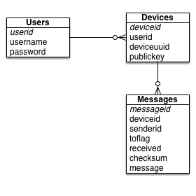
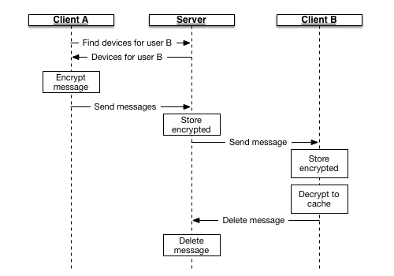
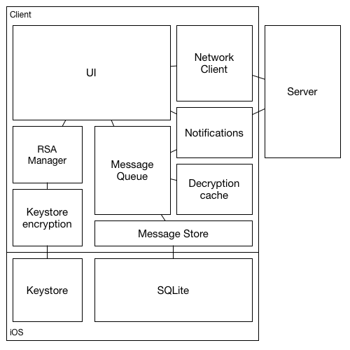

No system is 100% secure. The design goal of SecureChat, however, is the following:
Secure all messages end-to-end.
We use an RSA public/private key system to encode all messages on the client device, and transmit only the encrypted message to the server for delivery to the destination device. This implies if a user has multiple devices, we will encrypt the message multiple times, once for each destination device.
Minimize data on the server
One method by which an attacker can obtain data is to hack the back-end server. We minimize the exposure to an attacker through the following techniques:
Minimize exposure to hacking on the device
Another method by which an attacker can obtain data is to obtain access to a device. We minimize exposure to an attacker through the following techniques:
Minimize exposure to packet sniffing
A third method is to listen to all network communications, in order to gain insight into information that can be used to hack the system. We minimize exposure to an attacker through the following techniques:
(Note: We do not encrypt the entire message, which is sent as JSON POST requests and received as JSON formatted data to an HTTP server. Thus, for additional security you should install the server on a server that uses an SSH secured socket. Doing that is beyond the scope of this document.)
It is worth remembering that SSH by itself does not prevent a Man in the middle attack, so it is worth considering designing your protocol as if it were sent in the clear.
The SecureChat Server is actually quite simple; it serves as a means by which clients advertise their own public key, and for discovering the public key of other devices belonging to a given user. Individual users can have multiple devices associated with their account. Because the goal is to minimize storage on each device, the database itself is quite simple.
The server database consists of 5 tables total, of which three are actively used. (A fourth is used to track requests for forgotten passwords, and a fifth is used to track the version of the schema loaded into the database.) These tables give the list of users (storing only the username and the hashed password), the list of devices owned by each user, and the list of messages that are waiting for delivery to each device. Note that because of the way messages are sent, encoded with the public key of each device, a message may show up multiple times for each user. Further, this implies that when a user adds a device to his account, he will not have access to his message history for that account. This is a deliberate design decision.
A user account consists of only three fields: the internal ID of the user, the username, and a password (which has been hashed using SHA-256). No other personally identifying information is captured, not even an e-mail address. This has a number of implications; for example, the only way a password can be reset if the user forgets his password is to make a request from another device.
Associated with each user is one or more devices. A device is identified by a unique identifier (generated by the device using a cryptographically generated random number) and an RSA public key. When a user is sent a message, the sending client must download the public key for all devices the user owns, and separately encrypt the message each time for each device.
Associated with each device is a separate message queue. This is used to temporarily store messages for devices that are not on-line. Messages are then delivered to devices that go on-line, and removed when the device successfully acknowledges receipt of the message.
When a message is sent to a user, the first thing the client does is obtain a list of devices associated with a user. Then the client encodes the message using the public key of each device the message is being sent to. Finally the message is uploaded to the server, and the server notifies all devices which received a message. Once the message is delivered to a device, the device responds to the server to delete the message.
In addition to serving as a public key directory for owned devices, the server has the ability to handle direct socket connections from a client, so that messages sent to the server can be immediately relayed to an on-line client. This is an optional service; if the server environment does not permit a socket from being opened to receive non-HTTP connections, the client will default to polling the server for messages on a 15 second interval.
The server also contains calls for new membership onboarding, updating the user password, and for managing devices associated with a user.
More information can be found on the Server Architecture page.
Because the client is responsible for far more than the server, the client is necessarily more complex. Besides the custom RSA code, the client consists of a number of other components used for managing the public and private key, for communicating with the back-end, and for storing and managing messages.
Elements of the client code include:
More information can be found on the Client Architecture page.